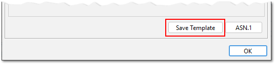
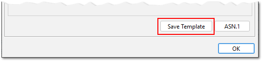

This release includes the following improvements and bug fixes:
- Certificate serial numbers can now be entered in hexadecimal format as well (contributed by Stephen Tomkinson). Hex numbers are detected ...
- if the input contains the letters a-f or A-F, for example "1a2b3c4d5e6f" or "1A2B3C4D5E6F" (decimal: 28772997619311)
- or if the input starts with "0x", for example "0x12345678" would be interpreted as decimal 305419896
- Additional button in "Certificate Extensions" window to save those extensions as a template (contributed by Stephen Tomkinson)
- KSE allows now to select multiple entries by pressing SHIFT or CTRL and perform the following operations on all selected entries (contributed by Christoph Kaser):
- cut
- copy
- paste
- delete
- Fixed AKI/SKI extensions and Issuer/Subject Organisation not shown in table view (reported by Michael Karnerfors)
- Fixed AKI/SKI extensions not being updated when added from a template or CSR (reported by Michael Karnerfors)
- Fixed an error when inspecting a SAN extension that contains a User Principal Name (reported by e4711s)
- Key Usage extension is now correctly marked as critical in all default extension templates (reported by James K Polk)
- macOS: Fixed an incompatibility with VAqua Look&Feel that caused a save dialog to be shown instead of an open dialog (reported by Filipe Forneck, fix contributed by Gary Bartlett)
- macOS: VAqua Look&Feel is no longer the default
- macOS: The application bundle now contains a custom Java runtime. This fixes issues with detection of JRE installations and notarization.
- SHA256 is now used in timestamp requests (instead of SHA1)
- PKCS#12 is now the default when creating a new keystore. This reflects the transition from JKS to PKCS#12 as the default keystore in Java 9 (JEP 229).
- Updated Bouncy Castle library to version 1.66

 
